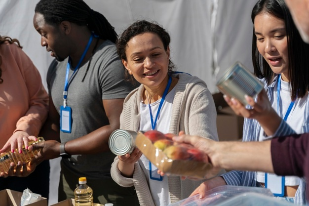
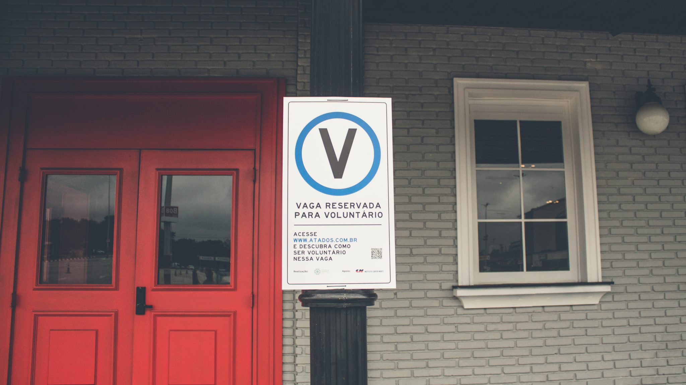

Você quer ser um voluntário, mas não sabe como encontrar uma ONG que precise de suas habilidades? Por onde devo começar a pesquisar? Será que todas as informações que encontro na rede são seguras?
A melhor forma de fazer sua atuação como voluntário prosperar é escolhendo uma causa na qual você realmente acredite. Pense naquilo que mais lhe comove e mais desperta vontade de ajudar e estude ONGs que precisam de ajuda e que realizam trabalhos voltados para estas áreas.
Hoje em dia você pode encontrar uma oportunidade facilmente pela internet ou mesmo através de indicação de conhecidos, lembrando claro de sempre pesquisar se a ONG é idônea, se existe mesmo, talvez vale a pena, se possível, fazer uma visitinha ao local.
Também existem algumas plataformas online onde você pode pesquisar as instituições e oportunidades num lugar só, uma delas é o Atados. Veja a seguir o que é a Atados e como funciona.
O Atados é uma plataforma social online que conecta pessoas a oportunidades de voluntariado em causas sociais.
Nessa plataforma você pode encontrar uma oportunidade de diversas maneiras:
- Se você já tem uma causa que te mobiliza ou quer conhecer novas causas;
- Por interesse em atuar numa região específica da sua cidade ou ser voluntário à distância;
- Ou então, você domina uma habilidade ou quer se desenvolver e colocar seus conhecimentos em prática.
Basta entrar no site (clique aqui), se cadastrar e buscar pelo trabalho que mais tem a ver com suas habilidades pessoais. Você seleciona o tema, o local e diversas outras especificações para encontrar o trabalho voluntário ideal.
Em tempos de pandemia, diversas iniciativas buscam ajudar quem está mais vulnerável durante a crise do coronavírus. Com a imposição do isolamento social, o voluntariado online tem se mostrado como uma ótima forma de ajudar quem precisa sem sair de casa. Além de ter um impacto positivo na vida de outras pessoas, o trabalho voluntário pode ser um grande diferencial na hora de buscar um emprego ou para entender melhor seu papel no mercado de trabalho.
Sem sair de casa, é possível investir seu tempo, suas habilidades e sua experiência em atividades que constroem um mundo mais igualitário e justo. Na plataforma do Atados, há vagas de voluntariado online em ONGs para os mais diversos perfis de interesse. Uma delas vai ser a sua cara! Para dar alguns exemplos, é possível atuar em campanhas de arrecadação online, em projetos de divulgação científica, na gestão das redes sociais da instituição, com tradução, com ensino remoto para crianças e idosos, com acompanhamento psicológico, entre muitos outros.
No endereço atados.com.br/vagasonline, você confere oportunidades para quem deseja atuar na modalidade online.
